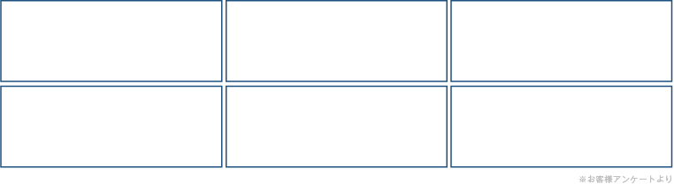
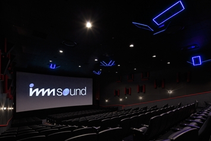
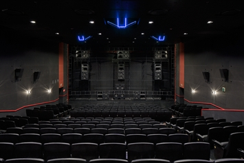
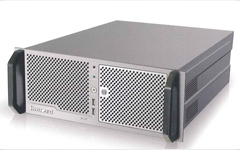
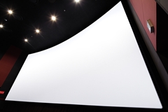

「imm sound」は、デジタル時代の映画に究極の臨場感を実現するために開発された次世代型音響システムです。
後方から頭上をかすめて飛び去るジェット機の轟音、見上げた木々から聞こえてくる小鳥たちのさえずり、静かに降りはじめた雨の音……。
驚くほどリアルに再現された立体サウンドが客席全体をすっぽりと包み込み、まるで映画の中にいるような感覚をもたらします。
この「imm sound」を導入するシアターは、その独自の技術により“臨場感あふれる音響体験”をお客様に提供するものであります。
シネマサンシャイン平和島は、日本国内で唯一「imm sound」を導入している劇場となります。

従来の映画音響は客席の前後左右を平面的にカバーする2Dサウンドでした。
これに対し、「imm sound」では劇場の全体にスピーカーを配置することで、垂直方向も含めたすべての空間をカバー。音の立体的な移動や定位を可能にし、映画鑑賞にこれまでにない圧倒的なリアリティを実現しました。


サウンドデザイナーが各劇場の3D空間における音の広がりや残響を入念にチェックし、その劇場の形状や広さに合わせて14.1ch～23.1chの中から最適なチャンネル数とスピーカーレイアウトを決定します。
最高の3Dサウンドが体感できるようにすべてのimm sound導入シアターが理想的にカスタマイズされています。

※スクリーン設置前
imm 3D soundシアターは、ステレオ（2ch）、5.1ch、7.1chといった従来のオーディオフォーマットでつくられたコンテンツにも対応可能です。
メインユニットであるimm 3D SP-Uシネマサウンドプロセッサーが2Dサウンドをリアルタイムに3D変換し、立体感のあるリアルなシネマサウンドに最適化します。

既存のものよりも約1.4倍大きく、さらに約1.8倍の明るさを持つスクリーンをわずかに湾曲させて設置することにより、全ての観客に最良の映像を届けます。
高級感あるソフトレザーシートを導入し、さらに快適な鑑賞を約束します。
